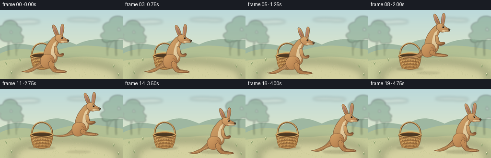
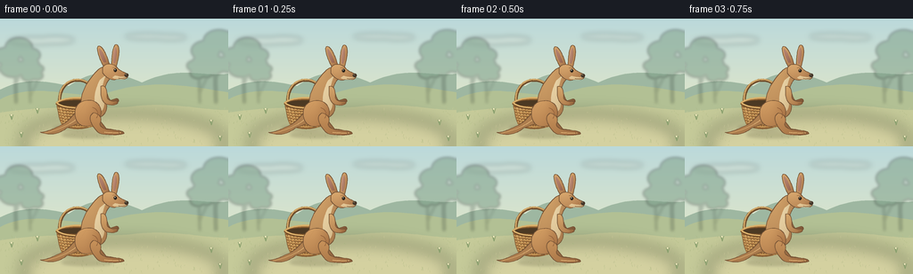

CODING AGENTS AS PIXEL WORLD MODELS
traex/GPT-6.1-Sol · dynamic_spatial_relationship_0033
点击播放 · 原生 RGB 像素
逐轮保存的候选
回放视频、检查图与代码变化。
每份候选均可单独播放。实际图片检查记录在下方工具轨迹中。
候选 01播放与检查图
点击播放 · 原生 RGB 像素


展开代码变化
--- 上一保存版本
+++ 本次保存版本
@@ -0,0 +1,218 @@
+from pathlib import Path
+import math
+import numpy as np
+from PIL import Image, ImageDraw, ImageFilter
+import artifact_io
+
+ROOT = Path(__file__).resolve().parent
+S = 4
+W, H = 256, 144
+RNG = np.random.default_rng(311)
+
+def bezier_path(seq):
+ pts = []
+ now = (0, 0)
+ start = None
+ for seg in seq:
+ op, *v = seg
+ if op == 'M':
+ now = tuple(v); start = now; pts.append(now)
+ elif op == 'L':
+ now = tuple(v); pts.append(now)
+ elif op == 'C':
+ a = np.array(now); b = np.array(v[:2]); c = np.array(v[2:4]); d = np.array(v[4:6])
+ for t in np.linspace(0, 1, 24)[1:]:
+ pts.append(tuple((1-t)**3*a + 3*(1-t)**2*t*b + 3*(1-t)*t*t*c + t**3*d))
+ now = tuple(d)
+ elif op == 'Q':
+ a = np.array(now); b = np.array(v[:2]); c = np.array(v[2:4])
+ for t in np.linspace(0, 1, 18)[1:]:
+ pts.append(tuple((1-t)**2*a + 2*(1-t)*t*b + t*t*c))
+ now = tuple(c)
+ elif op == 'Z':
+ pts.append(start)
+ return pts
+
+def line(im, points, color, width=1):
+ ImageDraw.Draw(im).line([(round(x*S),round(y*S)) for x,y in points], fill=color, width=max(1,round(width*S)), joint='curve')
+
+def ellipse(im, box, fill, outline=None, width=1):
+ ImageDraw.Draw(im).ellipse(tuple(round(v*S) for v in box), fill=fill, outline=outline, width=max(1,round(width*S)))
+
+def flat(im, seq, fill, outline=None, width=.7):
+ pts = bezier_path(seq)
+ ImageDraw.Draw(im).polygon([(round(x*S),round(y*S)) for x,y in pts], fill=fill)
+ if outline:
+ line(im,pts,outline,width)
+
+def shade(im, pts, light, dark, edge=None, grain=1.5):
+ xx=[p[0] for p in pts]; yy=[p[1] for p in pts]
+ x0=max(0,int(min(xx)*S)-2); y0=max(0,int(min(yy)*S)-2)
+ x1=min(W*S,int(max(xx)*S)+3); y1=min(H*S,int(max(yy)*S)+3)
+ if x1<=x0 or y1<=y0: return
+ mask=Image.new('L',(x1-x0,y1-y0),0)
+ ImageDraw.Draw(mask).polygon([(round(x*S)-x0,round(y*S)-y0) for x,y in pts],fill=255)
+ Y,X=np.mgrid[y0:y1,x0:x1]
+ dx=(X/S-min(xx))/max(1,max(xx)-min(xx)); dy=(Y/S-min(yy))/max(1,max(yy)-min(yy))
+ f=np.clip(.10+.53*dx+.46*dy-.16*np.sin(dx*np.pi),0,1)
+ rgb=np.array(light)[None,None,:]*(1-f[:,:,None])+np.array(dark)[None,None,:]*f[:,:,None]
+ # Fixed fine pigment texture, not a temporally changing noise field.
+ texture=np.sin(X*1.72+Y*2.93)*np.sin(X*.61-Y*1.35)
+ rgb=np.clip(rgb+texture[:,:,None]*grain,0,255).astype('uint8')
+ im.paste(Image.fromarray(rgb), (x0,y0),mask)
+ if edge: line(im,pts,edge,.65)
+
+def background():
+ Y,X=np.mgrid[0:H*S,0:W*S]
+ f=Y/(H*S)
+ a=np.array([187,217,219]); b=np.array([240,236,193])
+ rgb=a[None,None,:]*(1-f[:,:,None])+b[None,None,:]*f[:,:,None]
+ im=Image.fromarray(rgb.astype('uint8'))
+ sky=Image.new('RGBA',im.size)
+ d=ImageDraw.Draw(sky)
+ for x,y,rx,ry in [(38,25,28,4),(62,24,21,4),(166,20,26,3),(191,21,18,3)]:
+ d.ellipse(((x-rx)*S,(y-ry)*S,(x+rx)*S,(y+ry)*S),fill=(255,255,240,72))
+ sky=sky.filter(ImageFilter.GaussianBlur(3*S)); im=Image.alpha_composite(im.convert('RGBA'),sky).convert('RGB')
+ flat(im,[('M',0,80),('C',25,67,48,69,77,76),('C',109,53,134,61,159,72),('C',201,52,226,66,256,62),('L',256,105),('L',0,105),('Z',)],(158,183,161))
+ flat(im,[('M',0,91),('C',37,71,80,89,113,86),('C',168,66,211,76,256,83),('L',256,122),('L',0,122),('Z',)],(178,192,148))
+ # Soft, distant eucalyptus-like trees frame the action.
+ trees=Image.new('RGBA',im.size)
+ for x,y,scale in [(18,42,1),(242,36,1.15),(224,53,.6),(34,57,.56)]:
+ line(trees,[(x,95),(x-1,y+10),(x-8,y-6)],(103,128,110,115),2*scale)
+ line(trees,[(x,y+30),(x+12,y+5)],(103,128,110,100),1.5*scale)
+ for ox,oy,r in [(-10,0,14),(3,-10,15),(16,-1,11),(-4,14,14),(13,13,12)]:
+ ellipse(trees,(x+(ox-r)*scale,y+(oy-r*.7)*scale,x+(ox+r)*scale,y+(oy+r*.7)*scale),(126,160,136,140))
+ trees=trees.filter(ImageFilter.GaussianBlur(1.6*S))
+ im=Image.alpha_composite(im.convert('RGBA'),trees).convert('RGB')
+ flat(im,[('M',0,106),('C',61,96,108,103,148,99),('C',191,93,234,104,256,103),('L',256,144),('L',0,144),('Z',)],(197,202,153))
+ # Warm clearing in front of the meadow.
+ patch=Image.new('RGBA',im.size)
+ ellipse(patch,(25,107,251,166),(227,216,168,125))
+ patch=patch.filter(ImageFilter.GaussianBlur(9*S))
+ im=Image.alpha_composite(im.convert('RGBA'),patch).convert('RGB')
+ for _ in range(350):
+ x=float(RNG.uniform(0,256)); y=float(RNG.uniform(102,144))
+ col=tuple(int(c) for c in RNG.choice(np.array([[164,179,125],[182,187,137],[211,207,156],[169,181,125]])))
+ length=float(RNG.uniform(.7,3))
+ line(im,[(x,y),(x+float(RNG.uniform(-1,1)),y-length)],col,.3)
+ for x,y in [(13,114),(24,134),(237,120),(247,138),(42,107)]:
+ for dx in [-2,-.5,1.8]: line(im,[(x,y),(x+dx,y-4-abs(dx))],(137,159,109),.65)
+ ellipse(im,(x-1.3,y-5.9,x+.2,y-4.4),(242,235,192))
+ return im
+
+def shadow(im,x,y,rx,ry,opacity):
+ layer=Image.new('RGBA',im.size)
+ ellipse(layer,(x-rx,y-ry,x+rx,y+ry),(86,84,55,opacity))
+ layer=layer.filter(ImageFilter.GaussianBlur(1.7*S))
+ return Image.alpha_composite(im.convert('RGBA'),layer).convert('RGB')
+
+def basket(im):
+ # A visible arched carrying handle and a deep elliptical mouth.
+ handle=bezier_path([('M',67,95),('C',64,61,109,60,109,95)])
+ line(im,handle,(112,76,42),3.5)
+ line(im,[(x-.45,y-.65) for x,y in handle],(207,166,103),1.8)
+ for j in range(3,len(handle)-2,4):
+ x,y=handle[j]; line(im,[(x-1,y-.5),(x+1.0,y+.5)],(154,112,63),.45)
+ shape=bezier_path([('M',63,95),('C',66,107,66,119,73,122),('C',82,125,96,125,103,121),('C',108,116,109,106,111,95),('C',101,89,74,89,63,95),('Z',)])
+ shade(im,shape,(220,177,109),(146,98,51),(130,87,47),.9)
+ # Curved woven ribs and interlaced horizontal strands.
+ for i in range(12):
+ top=65+3.85*i; bottom=72+(top-65)*.73
+ pts=bezier_path([('M',top,97),('Q',top*.4+bottom*.6,110,bottom,121)])
+ line(im,pts,(126,87,45),.75)
+ line(im,[(x+.85,y) for x,y in pts],(232,187,121),.55)
+ for j,y in enumerate(np.arange(99,122,3.1)):
+ inset=(y-98)*.25
+ points=bezier_path([('M',64+inset,float(y)),('C',77,float(y+3),98,float(y+3),110-inset,float(y))])
+ line(im,points,(133,89,47),1.15)
+ line(im,[(x,y-.75) for x,y in points],(221,175,104),.8)
+ for k in range(11):
+ xx=67+k*3.8+inset*.25
+ if xx<109-inset:
+ line(im,[(xx,y+1.0),(xx+1.8,y+1.0)],(189+(k+j)%2*13,139,76),.7)
+ ellipse(im,(62.5,89.6,111.5,101),(133,89,45),(187,136,73),1.3)
+ ellipse(im,(66,92,108,98.4),(76,57,35))
+ # Rolled lip with a light top edge.
+ rim=bezier_path([('M',63,95),('C',71,103,101,103,111,95)])
+ line(im,rim,(118,79,42),3.1)
+ line(im,[(x,y-.6) for x,y in rim],(229,187,116),1.6)
+ line(im,bezier_path([('M',63,95),('C',73,87,101,87,111,95)]),(217,177,108),1.8)
+
+def kangaroo(im,x,ground,lift,crouch,air,phase):
+ # The local coordinate system follows the pelvis; all anatomy remains coherent.
+ y=ground-lift+crouch
+ sy=1-crouch*.009
+ def tr(p): return (x+p[0],y+p[1]*sy)
+ def shape(seq,light=(205,155,99),dark=(146,99,61),edge=(115,82,53)):
+ pts=[tr(p) for p in bezier_path(seq)]
+ shade(im,pts,light,dark,edge)
+ def stroke(seq,col,width=.65):line(im,[tr(p) for p in bezier_path(seq)],col,width)
+ def oval(box,col,outline=None,width=.7):
+ a=tr(box[:2]); b=tr(box[2:]);ellipse(im,(*a,*b),col,outline,width)
+ # Powerful tapered tail, grounded during the rest, swept back in flight.
+ tip=-2-air*10
+ shape([('M',-10,-32),('C',-24,-23,-24,-14,-40,-8-air*4),('C',-48,-4-air*8,-54,tip,-59,tip),('C',-50,tip+3,-40,tip+4,-29,-7-air*3),('C',-15,-13,-5,-14,2,-23),('Z',)],(201,149,93),(146,103,64))
+ stroke([('M',-54,tip+.8),('C',-37,-5-air*5,-24,-11,-16,-19)],(220,175,116),.7)
+ # Far arm and far leg behind the near body.
+ shape([('M',9,-55),('C',17,-51,16,-40,20,-38),('L',26,-40),('Q',29,-40,29,-37),('Q',20,-31,16,-34),('L',6,-47),('Z',)],(179,126,79),(124,85,54))
+ tuck=air*13
+ shape([('M',-6,-30),('Q',13,-28,8,-15-tuck*.4),('L',15,-6-tuck),('Q',27,-5-tuck,31,-2-tuck),('Q',34,1-tuck,23,1-tuck),('L',8,-1-tuck),('L',-4,-16),('Z',)],(176,125,78),(128,87,54))
+ # Pear-shaped trunk, narrow chest, sloping neck.
+ shape([('M',-9,-24),('C',-18,-34,-11,-52,-3,-62),('C',3,-70,8,-76,14,-76),('L',22,-65),('C',10,-55,14,-45,15,-35),('C',18,-25,10,-16,-1,-18),('Z',)],(219,171,111),(158,112,70))
+ # Pale throat and belly reflect warm sunlight.
+ shape([('M',15,-67),('Q',9,-53,10,-45),('C',15,-34,13,-26,5,-23),('C',0,-33,1,-48,8,-61),('Z',)],(239,218,175),(206,178,129),None)
+ # Rounded muscular thigh and folded lower hind leg.
+ shape([('M',-6,-38),('C',-22,-37,-23,-20,-16,-12),('C',-9,-5,7,-10,9,-22),('C',11,-33,2,-39,-6,-38),('Z',)],(219,166,105),(160,108,65))
+ shape([('M',1,-24),('Q',12,-21,8,-12-tuck*.32),('Q',7,-8-tuck*.65,16,-5-tuck),('L',29,-4-tuck),('Q',35,-3-tuck,35,-.5-tuck),('Q',28,2-tuck,10,0-tuck),('Q',4,-1-tuck,-2,-13-tuck*.2),('Q',-5,-21,1,-24),('Z',)],(206,152,94),(146,98,59))
+ stroke([('M',-.5,-30),('C',6,-28,7,-22,4,-18)],(148,99,60),.65)
+ stroke([('M',13,-2-tuck),('Q',22,-1-tuck,32,-1.5-tuck)],(234,188,125),.8)
+ for xx in [29,31.5]:stroke([('M',xx,-2.7-tuck),('L',xx+1,-.3-tuck)],(112,82,53),.5)
+ # Long ears are drawn before the head to keep their bases tucked into the fur.
+ shape([('M',13,-75),('C',8,-82,3,-97,6,-99),('C',11,-101,17,-86,19,-77),('Z',)],(216,169,111),(158,107,68))
+ shape([('M',21,-76),('C',21,-85,22,-100,26,-101),('C',32,-100,29,-85,26,-75),('Z',)],(224,177,116),(163,112,71))
+ shape([('M',12,-81),('C',8,-88,6,-96,7.5,-96.5),('Q',12,-92,15,-81),('Z',)],(185,136,117),(151,101,80),None)
+ shape([('M',23,-80),('Q',22,-96,26,-98),('Q',28,-90,25,-80),('Z',)],(202,151,128),(154,107,85),None)
+ # Kangaroo's small head and elongated muzzle facing right.
+ shape([('M',11,-75),('C',14,-81,24,-80,28,-74),('C',31,-71,35,-70,38,-68),('Q',41,-64,36,-62),('L',27,-62),('C',22,-59,14,-64,11,-69),('Z',)],(224,175,115),(163,112,70))
+ shape([('M',25,-66),('Q',32,-64,38,-65),('Q',38,-61,28,-62),('Q',23,-62,22,-64),('Z',)],(233,207,159),(206,168,118),None)
+ oval((35.5,-68.6,40,-64.3),(68,55,42))
+ oval((36.1,-68.0,38,-66.8),(121,103,78))
+ stroke([('M',37,-63.7),('Q',32,-61.6,29,-63)],(100,73,48),.6)
+ oval((23.2,-73.9,27.1,-69.7),(103,76,49))
+ oval((24,-73.5,26.7,-70.3),(33,29,24))
+ oval((24.4,-73.0,25.35,-72.05),(255,249,226))
+ stroke([('M',22,-75),('Q',25,-76,28,-73.9)],(142,97,58),.55)
+ # Near small forearm held naturally in front of the chest.
+ arm=air*4
+ shape([('M',9,-54),('C',16,-56,16,-46,16,-41),('Q',18,-37-arm,24,-37-arm),('Q',28,-38-arm,28,-35-arm),('Q',25,-32-arm,19,-33-arm),('C',12,-33,10,-39,9,-44),('Z',)],(221,174,113),(156,104,62))
+ stroke([('M',23,-34.6-arm),('L',27,-35.4-arm)],(106,77,48),.6)
+ # A few restrained fur marks on the cheek and haunch.
+ for a,b in [((-12,-28),(-14,-25)),((-10,-32),(-12,-29)),((-8,-35),(-10,-32)),((13,-69),(15,-67)),((15,-67),(17,-66)),((-6,-53),(-8,-49))]:
+ line(im,[tr(a),tr(b)],(195,142,88),.35)
+
+def motion(i):
+ if i<=4: return 104,0,0.35*math.sin(i*.8),0
+ if i==5:return 104,0,3,0
+ if i==6:return 105,0,6,0
+ if 7<=i<=13:
+ u=(i-6)/7
+ return 105+91*u,29*math.sin(math.pi*u),0,math.sin(math.pi*u)**.65
+ if i==14:return 196,0,5,0
+ if i==15:return 196,0,2,0
+ return 196,0,.3*math.sin((i-15)*.9),0
+
+def main():
+ bg=background()
+ frames=[]
+ for i in range(20):
+ x,lift,crouch,air=motion(i)
+ im=bg.copy()
+ im=shadow(im,87,123,28,3.4,51)
+ basket(im)
+ im=shadow(im,x-6,131,29-lift*.18,3.4-lift*.035,int(61-lift*.9))
+ kangaroo(im,x,130,lift,crouch,air,i)
+ im=im.resize((W,H),Image.Resampling.LANCZOS)
+ frames.append(np.asarray(im.convert('RGB'),dtype=np.uint8))
+ artifact_io.save(np.stack(frames),ROOT)
+
+if __name__=='__main__':main()
可观测工具轨迹
实际执行的命令与返回图片。
命令 1exit 0
/bin/bash -lc 'ls -la && cat prompt.txt && cat GENERATION_RULES.md && cat task_spec.json'
命令 2exit 0
/bin/bash -lc "cat artifact_io.py && python - <<'PY'
import PIL,numpy
print('Pillow', PIL.__version__)
PY"命令 3exit 0
/bin/bash -lc 'python generate.py'
命令 4exit 0
/bin/bash -lc "python - <<'PY'
from pathlib import Path
import numpy as np
p=Path('.')
a=np.load(p/'pixels.npz')['pixels']
assert a.shape==(144,256,20)
assert len(list((p/'frames').glob('*.png')))==20
assert (p/'index.html').is_file()
print('Verified: 20 RGB frames, 256Ã144, 4 fps; saved player and pixel archive.')
PY"视觉工具实际返回图片 1

保存候选 1 份；完成命令 4 次；可验证图片返回 1 张。原始 API 响应与完整日志保留在本地。